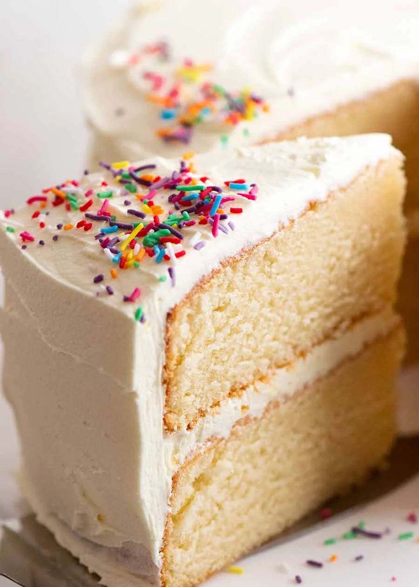

Cake
Home

Ingredients
- cooking spray
- 2 1/3 cups all-purpose flour
- 1 1/2 cups white sugar
- 2 1/4 teaspoons baking powder
- 1/4 teaspoon salt
- 3 large eggs
- 3/4 cup whole milk
- 3/4 cup vegetable oil
- 1 tablespoon vanilla extract
Instructions
- Preheat the oven to 350 degrees F (175 degrees C). Grease a 9-inch cake tin with cooking spray and line bottom with parchment paper.
- Mix flour, sugar, baking powder, and salt together in a large bowl. Add eggs, milk, vegetable oil, and vanilla; mix by hand or beat with an electric mixer on low speed until cake batter is smooth. Pour into the prepared pan.
- Bake in the preheated oven until a toothpick inserted into the center of the cake comes out clean, about 45 to 50 minutes. Cool on a wire rack for 5 minutes. Run a table knife around the edges to loosen. Invert cake carefully onto a cooling rack. Let cake cool completely.
- Use a long serrated knife to slice the cake horizontally through the center. Spread frosting or filling between the layers and replace the top half of the cake. Frost the top and sides as desired. See options below for a 3-tier cake.
Recipe Credit
Allrecipes Easy Vanilla Cake